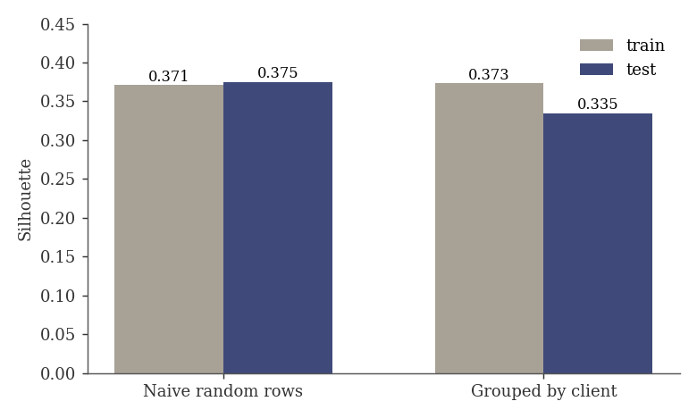
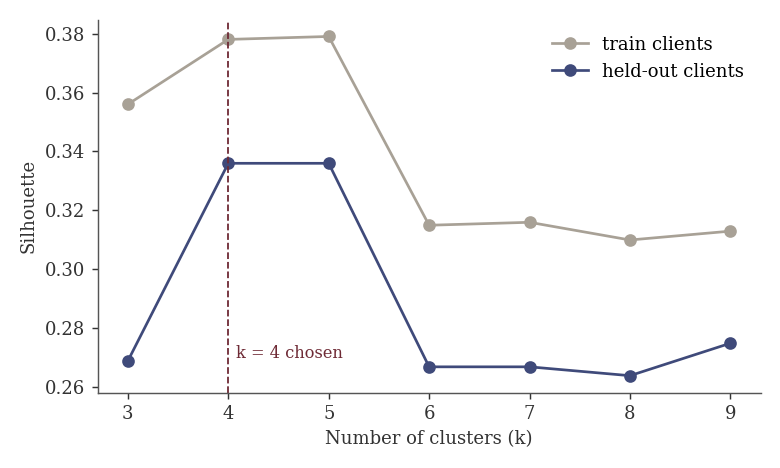
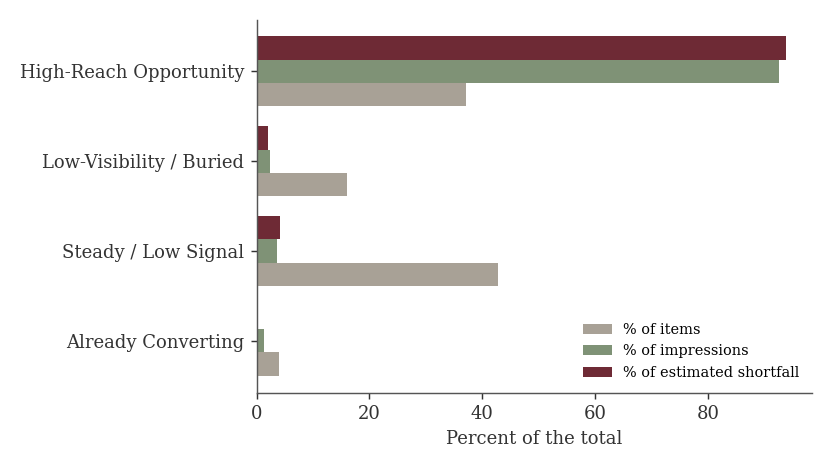

Which pages should an SEO team review first? Four content archetypes from 182,135 pages of search data
Abstract. A content platform like FlyRank manages thousands of pages per client and cannot refresh them all, so we asked which pages deserve human attention first. We used Google Search Console performance for 182,135 pages across 59 clients (release v20260703 of the FlyRank internship warehouse, 2025-01-27 to 2026-06-30, pages with at least 100 impressions). We built a rule baseline that scores each page by its click-through shortfall against pages at a similar position, then clustered pages with K-Means (k=4) on CTR, average position and log impressions, and validated on 12 held-out clients. On unseen clients the silhouette was 0.335 (0.373 on training clients), and we observed four archetypes, one of which (High-Reach Opportunity) holds 37% of pages but 94% of the estimated CTR shortfall. The result is a ranked, human-reviewed action queue for decision-support only; it is descriptive, not causal, and shares its inputs with the baseline.
1. Introduction
Imagine a site with tens of thousands of pages and one editor with a week to spare. Rewriting a page that only needed a better title wastes copywriting time. Deleting a page that was quietly earning traffic costs real visits. The decision is where to look first, and the cost of a wrong call is uneven: pruning by mistake is far worse than a slow review.
This is the problem behind FlyRank’s content-refresh data. As a client’s library grows, the team has to decide each cycle which pages to protect, which to refresh and which to leave alone. Search Console already records how every page performs, but a raw list of 182,135 pages does not say where to start. We treat that as the case study: can pages be grouped by how they behave in search, and can each group be matched to a review action a person can trust?
This paper groups pages by how they behave in search (CTR, rank, reach) and turns each group into a review action. It supports the people who assign the work: content operations leads and SEO strategists. It does not judge what pages say.
2. Data
- Source: FlyRank internship warehouse, build v20260703 (gated, pseudonymized). Table used:
fact_content_daily_performance, aggregated from daily rows to one row per page. - Unit of analysis: one row = one pseudonymized page, summed over each page’s available history.
- Window: 2025-01-27 to 2026-06-30. History depth differs by client, so pages have different numbers of active days (median 116).
- Size: 182,135 pages, 59 clients, about 1.76 billion impressions. This is the working subset (pages with at least 100 impressions), not the full 79M-row warehouse.
- Kept out of the model on purpose: client and page IDs (used only for grouping and joining), and every baseline output (score, action label, position bucket, reason code, clicks, expected CTR, CTR gap). These are product-style scores and would let the model learn the old rule.
- Public-safe: no client names, domains or queries appear in this page or the repo.
3. Methodology
Assumptions
Low CTR at a good position is a fixable gap, and pages with very few impressions are too noisy to diagnose (CTR ratios swing wildly), so they were dropped below 100 impressions.
Baseline (rule)
For each page: score = (expected_ctr − actual_ctr) × impressions, with the gap clipped at zero. Expected CTR is the average CTR of pages in the same position quartile. We checked the two signals first: CTR falls steadily as rank worsens (0.44%, 0.34%, 0.25%, 0.13% across quartiles), and high-impression pages sit near position 11, so there is headroom. 5,271 pages were flagged high priority.
Model
K-Means on three standardized features: ctr, avg_position, and log10(impressions + 1). No label exists, so this is unsupervised and the metric is silhouette score. K-Means was chosen because centers read directly as profiles and it scales to 182K rows.
Validation design
An honest test asks whether the clusters hold on clients the model never saw. We split by client (80/20, seed 42): 47 training clients, 12 test clients. A random row split would put the same client on both sides, like testing a student on the worksheet they studied. We report both.
Leakage checks
- No feature comes from a future window or a product flag, and no label is predicted, so classic supervised leakage does not apply.
- A control with shuffled cluster labels gave silhouette −0.007, so the harness does not manufacture skill.
- Shared-input risk: baseline score correlates +0.70 with raw impressions, which clustering also uses. Agreement between archetype and score is therefore partly built in.
Naming the archetypes
Our first naming rule used fixed thresholds and gave all four clusters the same name. We replaced it with relative-rank naming across the four clusters, plus an assertion that fails if names collapse again.
4. Results


The four archetypes on all 182,135 pages:
| Archetype | Pages | Mean CTR | Mean position | Mean impressions | Mean score |
|---|---|---|---|---|---|
| High-Reach Opportunity | 67,701 | 0.32% | 11.8 | 24,085 | 33.0 |
| Steady / Low Signal | 77,898 | 0.24% | 13.7 | 808 | 1.3 |
| Low-Visibility / Buried | 29,210 | 0.09% | 45.8 | 1,459 | 1.6 |
| Already Converting | 7,326 | 2.09% | 10.3 | 3,355 | 0.0 |

Model versus baseline
Both were evaluated on the same 182,135 pages. The baseline ranks pages by urgency; the clusters say what kind of problem a page has. Baseline score differs across clusters (ANOVA F = 4,258, eta squared = 0.066), a small effect. Because score and clusters share inputs, we read this as a consistency check, not evidence that clustering found something the baseline could not. What clustering adds is grouping: one review action per archetype instead of one long list.
5. Limitations and honest framing
- Shared inputs. Score and clusters both lean on volume (correlation +0.70 with impressions).
- Modest generalization. Silhouette drops from 0.373 to 0.335 on unseen clients, and only 12 clients were held out.
- Concentration. The three largest clients hold 53% of High-Reach pages and the largest client 16% of all pages, so results may reflect a few portfolios.
- Behavior, not meaning. There is no text or topic signal. Clusters group pages that behave alike, not pages about the same thing.
- Snapshot. Pages are summed over their history with no trend signal; 27% of pages have zero clicks.
- Unsure boundaries. 2,149 pages (1.2%) have negative silhouette; their archetype is ambiguous.
- No causal claim. This is cross-sectional data. We did not test whether acting on the queue improves clicks.
6. Ranked recommendations
These are decision-support suggestions for human review, in order.
- High-Reach Opportunity: fix title and meta, prioritized (67,701 pages). Best value for effort: the largest estimated gap on pages that already rank near position 12. Start with the top of the score-ranked list.
- Low-Visibility / Buried: review for prune or rework (29,210 pages). Worst position (45.8) with little signal. A person must approve every change; never delete automatically.
- Steady / Low Signal: low-priority review (77,898 pages). Modest on every axis. Look only if time remains.
- Already Converting: monitor only (7,326 pages). Best CTR (2.09%) and no measured gap.
Human review is required for anything that changes or removes live content, any item near a cluster boundary, any action touching more than 5% of one client’s traffic, and pages under 100 impressions. Retrain or re-check when held-out silhouette falls well below 0.335, when archetype names stop being distinct, or when the score–impressions correlation drifts far from +0.70.
7. Reproducibility
- Repository: github.com/dennis-jt-717/FR-PRJ
- Notebooks in
work/notebooks/:w04_baseline_score,w05_model,w06_validation_audit,w07_action_playbook, andcapstone. - Seeds:
random_state=42for K-Means and the client split (n_init=10). - Rerun order: w04 (queries the warehouse and writes
baseline_action_score.csv), then w05, w06, w07. Access needs a free gated approval on Hugging Face and a read token stored in Colab Secrets, never in a cell. - Large data files are not committed; the notebooks regenerate them.